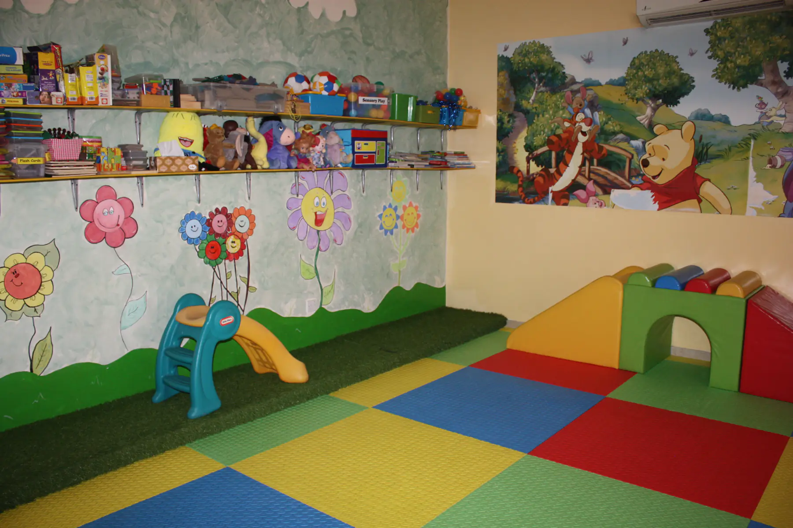
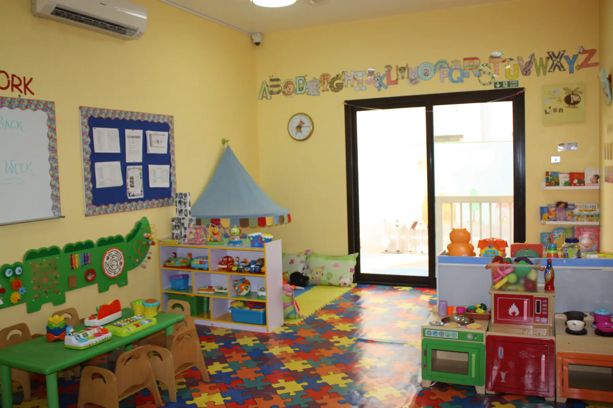
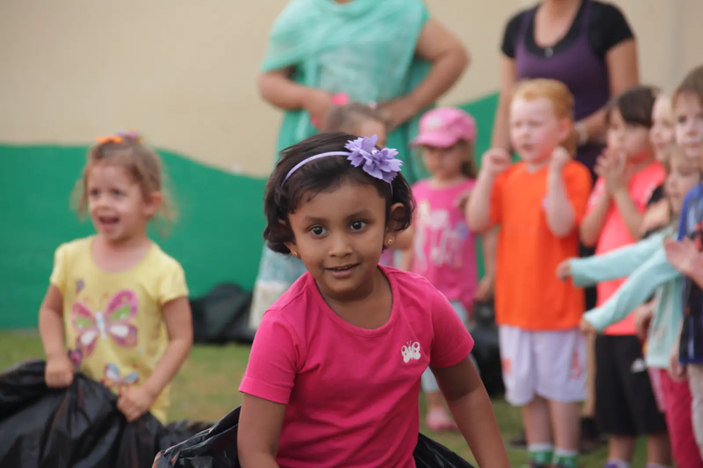

الرئيسية / الصفوف
صفوفنا
خمسة صفوف من عمر 3 أشهر حتى 4 سنوات. كل غرفة مجهزة لعمر أطفالها، والألعاب والكتب على رفوف منخفضة ليصل إليها الطفل ويستكشف على راحته.
01Treasure Keepersصف الرضّع · من 3 أشهر حتى المشي
غرفة الرضّع دافئة وآمنة، فيها فرش ناعم يحبو ويتحرك عليه الطفل بأمان، وهذا يساعد نموه الجسدي والذهني.
نحافظ على روتين طفلك المعتاد: الرضاعة والنوم حسب روتين البيت وبالاتفاق معكم، ونتعاون معكم في الفطام والأطعمة الصلبة عندما يحين وقتها.
- التعلّم باللعب
- ألعاب حسية بأصوات وألوان وملامس مختلفة
- ألعاب الأصابع والاختباء
- وقت الموسيقى والأغاني
- اللعب على الأرض والمرآة
- وقت مخصص للحضن والحنان
دفتر يومي لكل رضيع: ماذا أكل، تغيير الحفاض، أوقات النوم، وما شارك فيه خلال اليوم.

02Little Explorersصف الدارجين · من المشي حتى سنتين
غرفة ملوّنة ودافئة لصف صغير من 8 أطفال، بروتين يومي يجمع الأنشطة المنظمة والأنشطة التي يختارها الطفل، ضمن مجالات التعلم السبعة.
- الغناء ووقت القصة
- الرقص
- الرسم واللصق
- اللعب بالرمل والماء
- ألعاب الخيال
- اللعب الحر بالمواد
- اللعب في الخارج بألعاب الدفع والسحب والعجلات
نركّز في هذه المرحلة على تطوير اللغة والكلام.

03Jolly Rogerمجموعة اللعب · تمهيد للروضة
صف تمهيدي يهيّئ الطفل لبيئة التعلّم: الثقة في التعلم باستقلالية، وتكوين الصداقات في جو آمن.
نركّز على الإصغاء والمهارات الحركية، والروتين اليومي قريب جداً من روتين الروضة.

04Mini Pirates & Neverland Kidsالروضة · من سنتين إلى 3 سنوات
طفل السنتين يقول "هذا لي" و"أبغى" لكل شيء. فبقليل من التوجيه وكثير من الصبر وجواب لكل "ليش؟"، يساعد فريقنا طفلك على الاختيار والتجربة والبناء والتعلّم بمتعة.
- منهج EYFS البريطاني
- Jolly Phonics لتعليم القراءة
- موضوع جديد كل أسبوع
- حصة رياضة أسبوعية
- ركن الحاسوب بشاشة لمس وتطبيقات تعليمية
- لعب في الخارج مرتين كل صباح

05Captain Hook's Crewالتأسيس 1 · من 3 إلى 4 سنوات
صف التأسيس يجهّز الأطفال للانتقال إلى "المدرسة الكبيرة"، ببرنامج أكثر تنظيماً يساعد كل طفل على بلوغ أهداف التعلم المبكر في منهج EYFS.
- حلقة الصباح مع التقويم ومشاركة القصص
- Jolly Phonics
- موضوع الأسبوع بمستوى التأسيس
- رياضة أسبوعية
- وقت في ركن الحاسوب
- حفل تخرّج في نهاية السنة